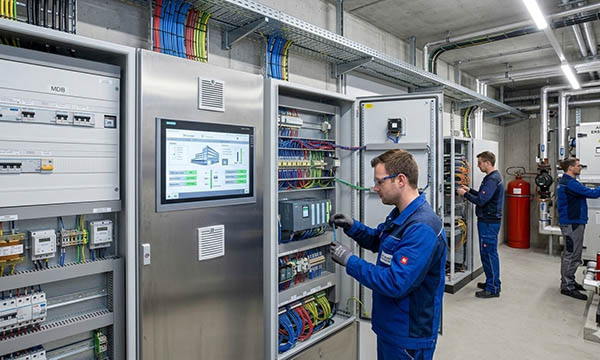

Electrical and control cabinets are central to modern electrical systems and automation solutions, distributing and regulating power across facilities of all sizes. In Germany, France, Italy, Switzerland, the United Kingdom, Norway, Austria, Poland, and the Benelux countries, these cabinets are used in commercial buildings, industrial plants, and complex automation systems. They contain intricate connections, terminals, wires, control components, and automation modules that must be carefully maintained to ensure operational reliability, efficiency, and safety.
Proper labeling and signage are essential to manage these systems. Engraved signs, terminal labels, cable markers, wire identification, industrial plates, type plates, asset tags, QR code labels, CE marking plates, and safety decals help technicians quickly locate components, understand wiring layouts, and perform maintenance accurately. SignXpert provides high-quality, fully customizable labeling and signage solutions designed to withstand industrial environments, ensuring that electrical and control cabinets remain organized, safe, and compliant across Germany and major European markets.
Electrical and Control Cabinets: The Heart of Modern Electrical Installations.
Electrical and control cabinets form the backbone of electrical installations, from small commercial offices to large industrial facilities. They distribute, monitor, and control power while housing critical components such as circuit breakers, relays, automation devices, wiring diagrams, and safety mechanisms. In Germany, advanced industrial facilities rely heavily on precisely installed cabinets, while France, Italy, Switzerland, the UK, Norway, Austria, Poland, and the Benelux region integrate similar solutions to meet stringent energy efficiency, safety, and automation standards.
Due to the complexity of these systems, any misconfiguration or unclear labeling can result in downtime, safety hazards, and costly repairs. Clearly engraved labels, type plates, terminal identification, wire markers, industrial plates, and safety decals allow for structured organization, simplified troubleshooting, and faster maintenance. SignXpert ensures that labeling solutions are durable, legible, and suitable for high-voltage and industrial environments, supporting reliable electrical infrastructure and long-term operational performance.
Clear Labeling: Ensuring Safety and Operational Efficiency.
Labeling inside electrical and control cabinets is a critical factor for both safety and operational efficiency. A single misidentified cable or terminal can cause equipment damage, power outages, or endanger personnel. Proper identification of cables, connections, control modules, and terminals accelerates maintenance and reduces human error. Engraved signs, cable markers, terminal labels, industrial plates, type plates, and CE marking plates provide precise information about component functions, safety instructions, and system layout.
Across Germany and Europe, including France, Italy, Switzerland, the UK, Norway, Austria, Poland, and the Benelux countries, proper labeling supports technicians in adhering to DIN, VDE, and European safety standards. SignXpert’s durable and industrial-grade labels help maintain a structured, safe, and compliant environment in electrical and control cabinets, ensuring efficient operations and reducing operational risks.
Optimizing Maintenance and Troubleshooting with Durable Labeling.
Maintenance and troubleshooting of electrical and control cabinets are critical for minimizing downtime and ensuring consistent performance. When issues arise in industrial plants, commercial buildings, or automated facilities, technicians rely on clear labeling to quickly locate wires, terminals, and components. Engraved labels, cable markers, terminal plates, industrial plates, and decals allow for rapid identification and reduce the risk of incorrect connections.
Clear and durable signage also facilitates understanding of complex electrical layouts, allowing for safe and efficient interventions. SignXpert’s labeling solutions make it easier to perform inspections, maintenance, and emergency repairs, ensuring that systems remain operational while preventing costly errors. In Germany, as well as France, Italy, Switzerland, the UK, Norway, Austria, Poland, and the Benelux countries, properly labeled electrical and control cabinets are essential for maintaining safety, operational efficiency, and compliance with local and European regulations.
Why SignXpert Is the Leading Provider of Labeling for Electrical and Control Cabinets.
SignXpert delivers high-quality, customizable labeling solutions designed specifically for electrical and control cabinets in industrial and commercial environments. Products include engraved signs, terminal labeling, cable and wire markers, type plates, industrial plates, asset tags, QR code labels, CE marking plates, and safety decals.
Our user-friendly online system allows clients in Germany, France, Italy, Switzerland, the UK, Norway, Austria, Poland, and the Benelux countries to design and order labels quickly, meeting project deadlines and operational requirements. With fast delivery and competitive pricing, SignXpert ensures that electrical and control cabinets are equipped with durable, legible, and compliant labeling. By choosing SignXpert, companies gain a reliable partner for enhancing safety, efficiency, and organization in electrical installations and control systems, while adapting to specific project needs and industrial environments across Europe.